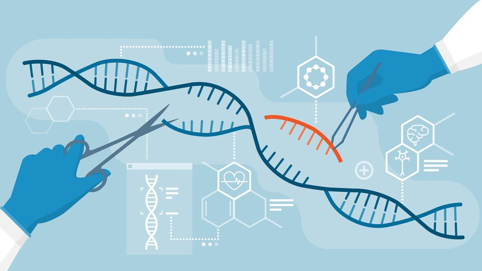

Modern genetics has led to numerous advancements in medicine, agriculture, and biotechnology. Here are some key areas of development:
The direct manipulation of an organism's genes using biotechnology. This includes techniques like CRISPR for gene editing.
The study of genomes, the complete set of DNA in an organism. Genomics has revolutionized our understanding of complex diseases and
Medical: Development of gene therapies, personalized medicine, and genetic testing.
Agricultural: Creation of genetically modified crops for better yield and resistance.
Environmental: Use of genetically modified organisms for pollution cleanup.
Ethical Considerations: With great power comes great responsibility. The ethical implications of genetic manipulation, cloning, and genetic privacy are critical discussions in the field of genetics.
Click me[Article: The Future of Genetic Engineering]
[Podcast: Ethical Dilemmas in Genetics]
[Webinar: Advances in Genomic Medicine]